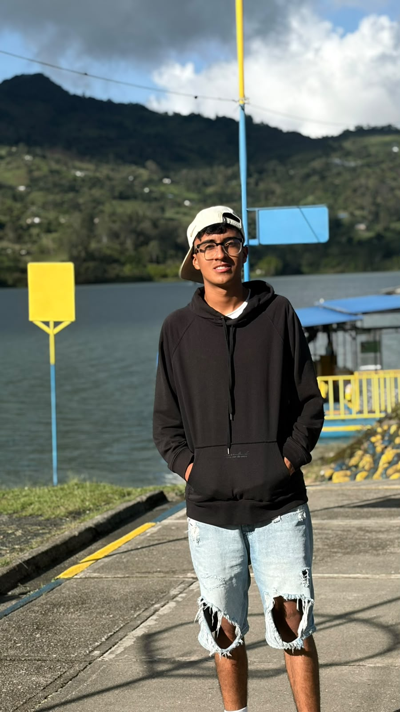

// 01 — presentación
Kevyn Yoel Cardenas Mendez

Gachalá, Cundinamarca
Crecí en Gachalá, conocida como la capital hidroeléctrica del Guavio. Un pueblo pequeño rodeado de montañas y del embalse que le da su identidad, el mismo lugar donde aprendí que las cosas grandes también nacen en lugares pequeños.
Esquí acuático
En las aguas del embalse del Guavio descubrí el esquí acuático, un deporte que me enseñó disciplina, equilibrio y a no rendirme ante la caída, habilidades que hoy aplico exactamente igual cuando un código no compila a la primera.
Bogotá — cumpliendo sueños
Llegué a Bogotá a estudiar Ingeniería de Sistemas en la Universidad El Bosque, dejando atrás lo conocido para perseguir algo más grande. Este portafolio es parte de ese camino: documentar cada paso de lo que estoy construyendo.
// 02 — proyectos
Lo que he construido
// 03 — evidencias del curso
Bases de Datos 1
Modelado
Diagramas entidad-relación, modelo lógico y modelo relacional desarrollados en el curso.
Normalización
Dependencias funcionales, formas normales de 1FN a 3FN y análisis de BCNF.
Proyecto final
SIREC: registro y análisis de los colados en las estaciones troncales de TransMilenio.
// 04 — contacto
Hablemos
$ email kcardenasm@unbosque.edu.co
$ teléfono +57 313 842 8857
$ github github.com/yoelcar2307
$ instagram @yoel_cardenas_